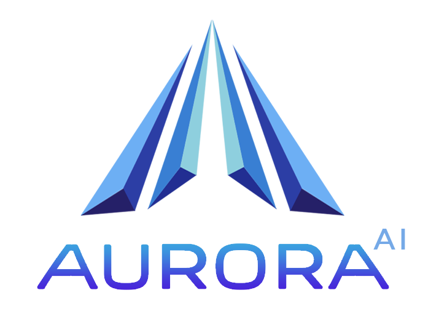

Marketing Mix Modeling: от данных к оптимальному бюджету
Первые шаги, общее руководство, частые вопросы
Как готовить данные, что стоит за моделью
Детальное описание визуальной части и чат-команд
Полный каталог функций и что изменилось в версии 2.4
Перетащи файл. Светофор покажет готов ли датасет, автоопределит роли столбцов.
Если есть TRP / impressions – укажи ₽/юнит. Без этого ROAS будет в native-единицах и несопоставим.
MCMC (3–15 мин). Результат – MQS, R², декомпозиция вкладов каналов.
Блоки A–E: текущий бюджет, найти оптимум, what-if, прогноз с инфляцией, сценарный анализ.
Медиаплан на 3/6/12 месяцев с учётом инфляции медиа и сезонности – поверх оптимизации.
PPTX + XLSX с графиками и комментариями. Готово к отправке руководству.
периоды / каналы ≥ 4 – рекомендуемое. < 2 – критически мало, MQS будет ограничен.R-hat > 1.1 модели доверять нельзя, увеличь warmup или сократи каналы.Стоимость юнита и пересобери.